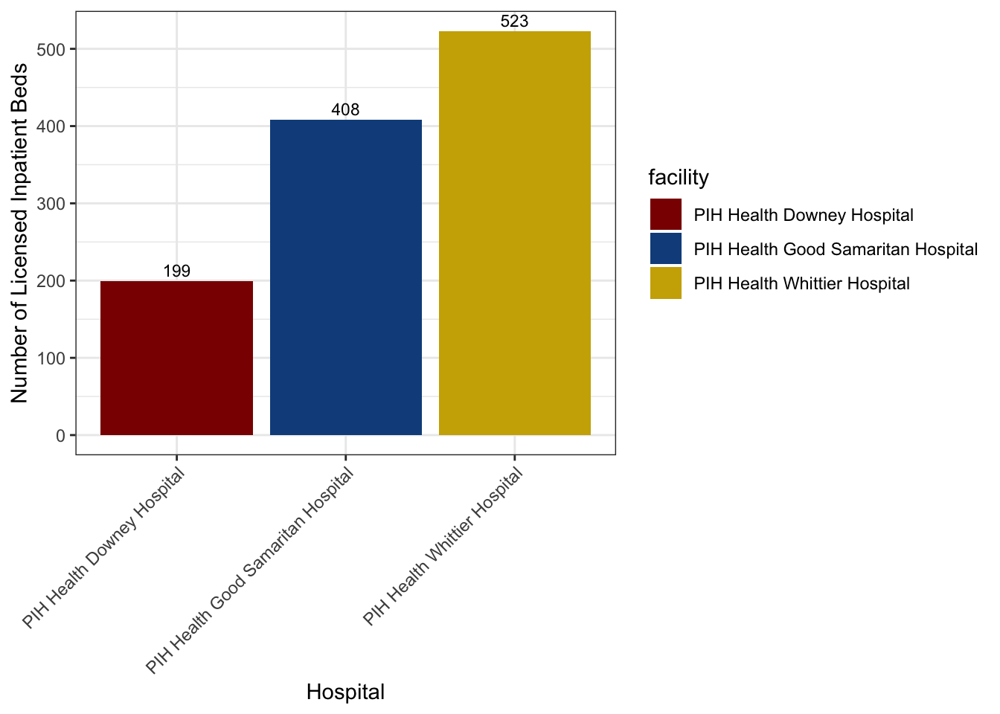
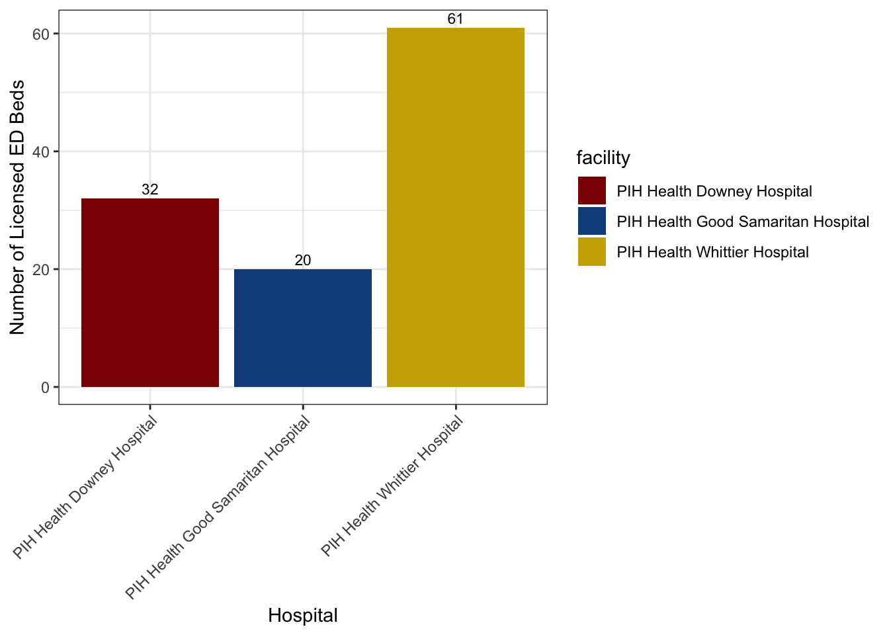
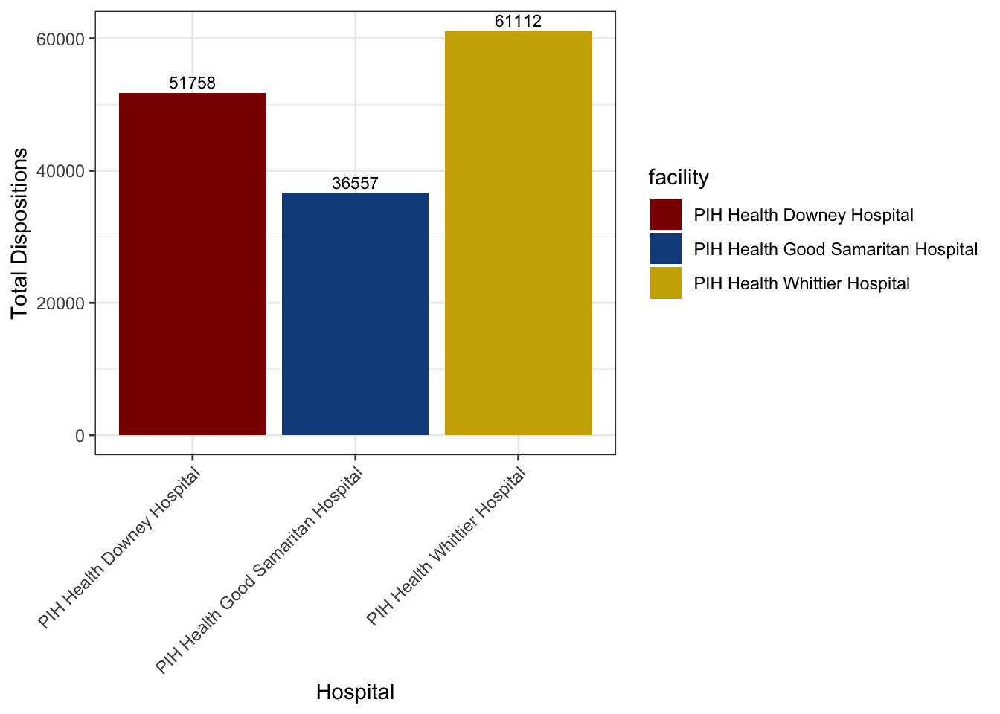

Primary question
How do ED disposition patterns vary across PIH Whittier, PIH Downey, and PIH Good Samaritan, and how do these hospital‑level differences align with payer mix, diagnosis categories, and age distribution?
Emergency departments (EDs) are a front door to hospital care and a mirror of community needs. This report compares ED utilization across three PIH Health hospitals in Los Angeles County (PIH Health Whittier, PIH Health Downey, and PIH Health Good Samaritan) to understand how patient pathways differ by hospital context. Each hospital serves a distinct catchment: suburban Whittier, community Downey, and urban Good Samaritan near Downtown LA. Together they provide an interesting snapshot of how payer mix, diagnosis burden, and patient demographics shape ED outcomes.
These hospitals were chosen due to both personal connections and their geographic diversity, which makes them a meaningful case study. I have volunteered for over four years in Whittier’s ED, where I witnessed the rhythms of a suburban hospital serving families and older adults. At Good Samaritan, I work as an EMT/ED Tech, where the downtown setting brings in a more diverse patient population with complex social and medical needs. Downey, close to my home, represents a community hospital that balances high Medi‑Cal reliance with strong ties to local neighborhoods. Experiencing these environments firsthand has shown me how the same emergency care framework can look very different depending on the community it serves. More recently, physicians from Whittier and Downey have begun working shifts at the Good Samaritan campus, and they too have remarked on how dramatically different the patient needs are and how much higher the acuity tends to be in the downtown setting. Their observations, combined with my own experiences across these hospitals, sparked my interest in using this dataset to explore these differences systematically as the focus of my research project.
This project is not only an academic exercise but also a way to connect data with lived experience. By comparing these three hospitals, I aim to highlight how differences in payer mix, diagnosis categories, and patient demographics translate into distinct ED disposition patterns. The analysis reflects both the numbers in the dataset and the human realities I have observed on the ground.
How do ED disposition patterns vary across PIH Whittier, PIH Downey, and PIH Good Samaritan, and how do these hospital‑level differences align with payer mix, diagnosis categories, and age distribution?
Differences in ED pathways, i.e., who gets admitted, transferred, discharged, or leaves AMA, carry operational and equity implications. They inform resource planning (behavioral health capacity, post‑acute care networks), coordination with community providers, and strategies to reduce avoidable returns or AMA events, especially for safety‑net populations.
This analysis uses the 2024 Emergency Department Pivot Profile published by the California Department of Health Care Access and Information. The dataset aggregates ED visits at the facility level, including counts for patient dispositions (e.g., routine discharge, inpatient transfer, psychiatric transfer, skilled nursing/custodial care, against medical advice, expired), payer categories (Medi‑Cal, Medicare, private insurance, self‑pay/uninsured), diagnosis groups (e.g., injury/poisoning, mental health, respiratory, circulatory), and demographic summaries (age, sex, race/ethnicity, preferred language). Because the data are aggregated, no individually identifiable health information is included.
For this project, we focus on three PIH Health hospitals in Los Angeles County:
The raw dataset was imported into R as a CSV file. Initial exploratory checks (dim(), str(), head(), names()) were conducted to confirm the dataset’s dimensions, variable names, and structure. This analysis ensured that the dataset contained the expected hospital records and helped identify missing values, anomalies, and variable groupings. Since this project focuses on the three PIH Health hospitals, only those facilities were retained for the dataset.
| Rows | Columns |
|---|---|
| 3 | 183 |
| Column |
|---|
| oshpd_id2 |
| oshpd_id |
| lat |
| long |
| FACILITY_NAME |
| LICENSE_CATEGORY_DESC |
| COUNTY_NAME |
| DBA_ADDRESS1 |
| DBA_CITY |
| DBA_ZIP_CODE |
Numeric fields with missing values were replaced with 0 to avoid skewing totals, while columns with character fields with missing values were removed. This was done as fields with missing values indicate that variable is not applicable to the selected hospitals in this dataset. Numeric columns were checked for negative entries, which would be invalid in count data. None were found.
Variable names were standardized to lowercase and simplified for ease of coding (e.g. facility_name to facility, disp_against_medical_advice to disp_ama). After this step, a new dataset was created, titled ed_clean, as now all the data is clean and ready to evaluated.
However, from the full dataset, only relevant variables were retained to reduce the amount of unneeded information, including:
To enable meaningful comparisons across hospitals, counts were normalized into proportions:
The retainment of only relevant variables and addition of proportions and ratios saw the creation of a new dataset: ed_slim, the slimmed dataset that we’ll be using for the rest of the project. This new dataset was rechecked for it’s dimensions using dim(ed_slim), names(ed_slim), and summary().
At this point, all the raw data looked good. Now, we begin adding our own columns, to normalize the data so data from all three hospitals can be directly compared to one another. This saw the creation of a total dispositions column, which summed up all disposition categories within each hospital. This also came with the creation of new variables for key disposition proportions, including psych transfer, SNF care, death, and AMA. The same was done for payer mix categories, including Medi-Care, Medical, private, public, self-pay/uninsured.
Our analysis begins with a geographic overview of the three PIH Health hospitals included in this study. Location is a critical contextual factor: it shapes the patient populations that present to each emergency department and influences the mix of clinical and social needs. To visualize this, a map was generated using Leaflet in R.
Now, let’s compare each hospital’s licensed inpatient bed capacity, which provides important context for interpreting ED dispositions. Bed size reflects each hospital’s ability to absorb admissions from the emergency department and can influence patterns such as inpatient transfers, AMA events, or reliance on post‑acute care.

In addition to inpatient capacity, the number of licensed ED treatment stations (beds) provides important context for understanding patient flow. ED bed counts reflect how much volume each hospital can accommodate at the “front door” of care, which in turn shapes crowding, wait times, and disposition patterns.
The bar chart below shows the number of licensed ED beds at each facility:

Now understanding the general set-up of the hospitals and their size, let’s take a look at how many total dispositions (dispos) each hospital had. This gives us a general idea of how many patients were seen in each ED.

Beyond overall volume, it is important to examine specific disposition pathways that carry operational and equity implications. Four categories were selected for comparison across hospitals (Against Medical Advice (AMA), Psychiatric Care Transfers, Skilled Nursing Facility (SNF) Transfers, and Deaths in the ED) because each reflects a critical juncture in patient care where system pressures, resource availability, and equity concerns are most visible.
As seen below, Good Sam had highest number of AMA events, reflecting the challenges of serving a downtown population with complex social needs and barriers to care. Psych transfers were more prominent at Whittier, which reflects its higher ED bed capacity, but Good Sam follows closely behind as well.
Given the that Good Sam has significantly less total dispos than Whittier but also has lots of psych transfers, psychiatric care/diagnoses seem to be an important aspect to uncover for these hospitals. Similarly, SNF transfers were the highest at Good Sam, with Downey following closely behind.
Understanding insurance types at these two hospitals also seems important, as most SNF patients are insured through Medicare and Medicaid. Deaths in the hospitals were relatively rare across all three hospitals, but Good Sam shows slightly higher counts, again reflecting its higher acuity downtown catchment.
Understanding payer mix is essential for interpreting ED outcomes, since insurance coverage shapes both access to care and post‑ED pathways.
Downey had the highest Medical patient rate, with over 30k (which is significantly high, considering the total dispo rate for the hospital is 51k). This suggests, and reflects, Downey’s role as a community hospital serving as a largely local, lower-income population.
Whittier has the strongest presence of Medicare, reflecting its older suburban patient base and larger proportion of seniors.
Good Sam demostrates a more diverse payer mix, with noteable shares of Medical and Medicare, together making up about 27k patients (of it’s total 36k total patients/dispos seen in 2024). Good Sam also had the highest rate of uninsured patients. This reflects the socioeconomic diversity of Good Sams downtown catchment.
Diagnosis burden provides another lens for understanding differences in ED utilization across hospitals. The grouped bar chart below compares five broad diagnostic categories: cardiovascular, respiratory, injury, mental health, and other/unknown.
Whittier shows the highest counts of cardiovascular, injury, and respiratory diagnoses, followed by Downey. Noteably, Good Sam has the lowest counts for all diagnoses, but had the highest amount of mental health diagnoses of all three hospitals.
While absolute counts highlight overall volume, proportions provide a clearer picture of how patient pathways differ relative to each hospital’s size. Looking at the four key dispositions (AMA, death, psych transfer, SNF), Good Sam has the highest rate for all key dispos when looking at proportions instead of raw counts.
Also looking at proportions rather than raw counts for insurance coverage gives a clearer picture at relative differences to each hospital’s patient payer mix. Downey has the highest proportion of Medi-Cal patients along with Good Sam close behind. This is a strong reflection of both hospital’s role as serving a largely low-income population with differing social needs. Whittier on the other hand had slightly higher Medicare rates, along with the highest rate for private insurances, which may be a reflection of better socioeconomic standing than that of the population served by Downey and Whittier. Noteably, Good Sam has the highest proportion of uninsured patients compared to Whittier and Downey.
When looking at proportions for diagnosis categories, Good Sam has the highest injury/trauma proportion compared to Whittier and Downey, along with a higher proportion of mental health diagnoses than both hospitals. Downey seems to have a higher rate of diagnoses for cardiovascular and respiratory conditions than the other two hospitals.
Demographics provide another important lens for understanding ED utilization. The line chart below shows how Whittier has generally a higher proportion of older patients, specifically those 80 years or older. Good Sam has a a bigger young adult population that both hospitals, with significantly a higher proportion of patients between 20 and 40 years old. Downey has a higher proportion of even younger patients, with a slightly higher pediatric patient population, along with a generally high younger adult population, reflecting it’s importance as a community hospital.
This comparative analysis of emergency department utilization across PIH Health Whittier, Downey, and Good Samaritan highlights how hospital context (suburban, community, and urban) shapes patient pathways.
Key findings:
As a reminder, these were our research questions:
How do ED disposition patterns vary across PIH Whittier, PIH Downey, and PIH Good Samaritan, and how do these hospital‑level differences align with payer mix, diagnosis categories, and age distribution?
These findings illustrate how ED outcomes are not uniform but shaped by hospital context, payer mix, diagnosis burden, and demographics. For operational planning, Whittier’s SNF transfers highlight post‑acute care needs, Downey’s Medi‑Cal reliance underscores community safety‑net roles, and Good Samaritan’s AMA, psychiatric transfers, and high proportion of mental health diagnoses, point to gaps in behavioral health and social support.
Because the dataset is aggregated, results reflect hospital‑level patterns rather than individual patient outcomes. The analysis is descriptive and comparative, not causal.
By connecting quantitative data with lived experience, this project shows how three hospitals within the same health system serve very different communities. Understanding these contrasts is critical for designing equitable emergency care strategies that meet patients where they are.